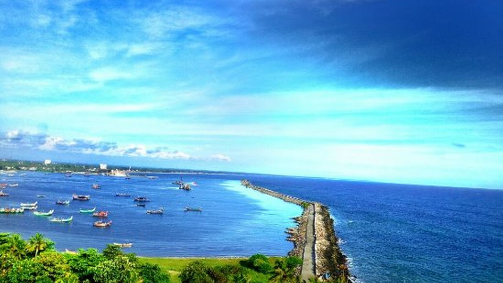

Thiruvanathapuram
Thiruvananthapuram, the capital city of Kerala, is a charming blend of tradition and modernity. Nestled along the southwest coast of India.
View More

Kollam
Kollam, also known as Quilon, is a beautiful coastal city in the southern state of Kerala. Rich in history and natural beauty,.
view morePathanamthitta
Pathanamthitta is a serene, forested district in southern Kerala, notable for the Sabarimala pilgrimage each year. .
view more